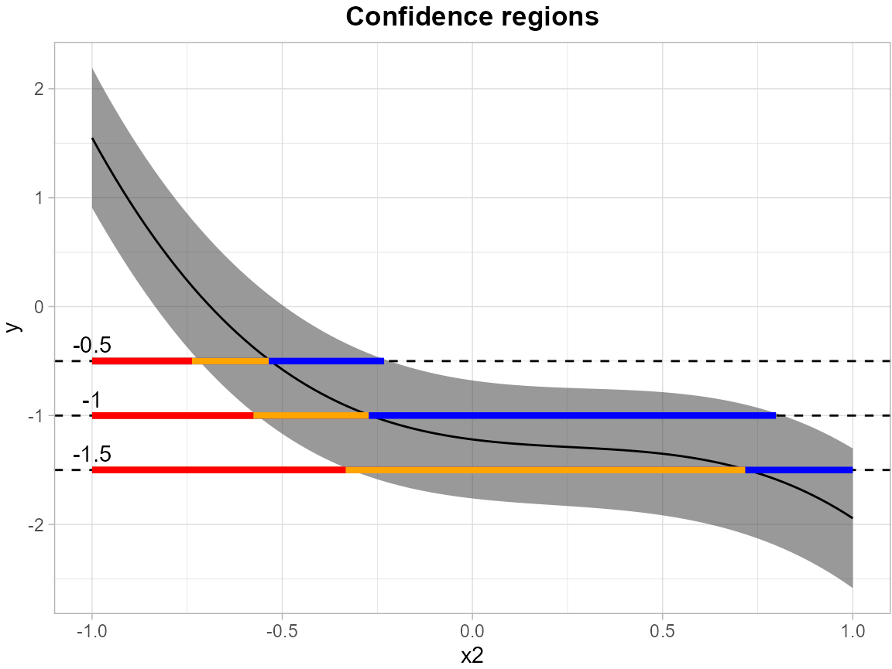
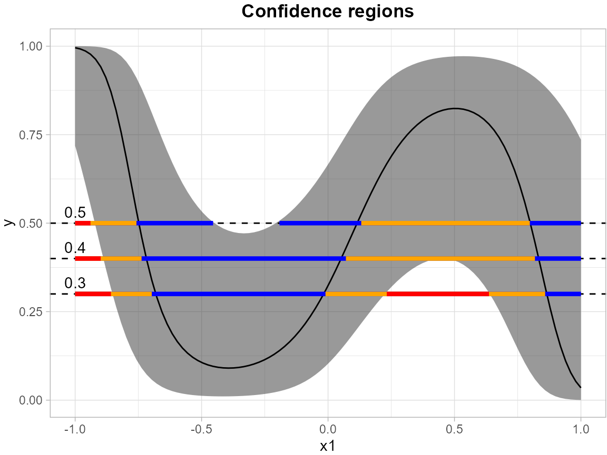
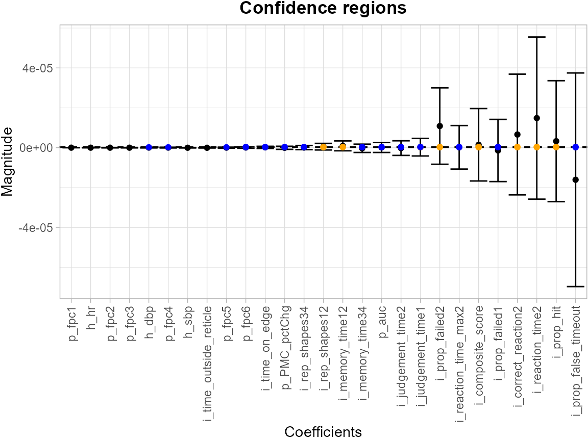
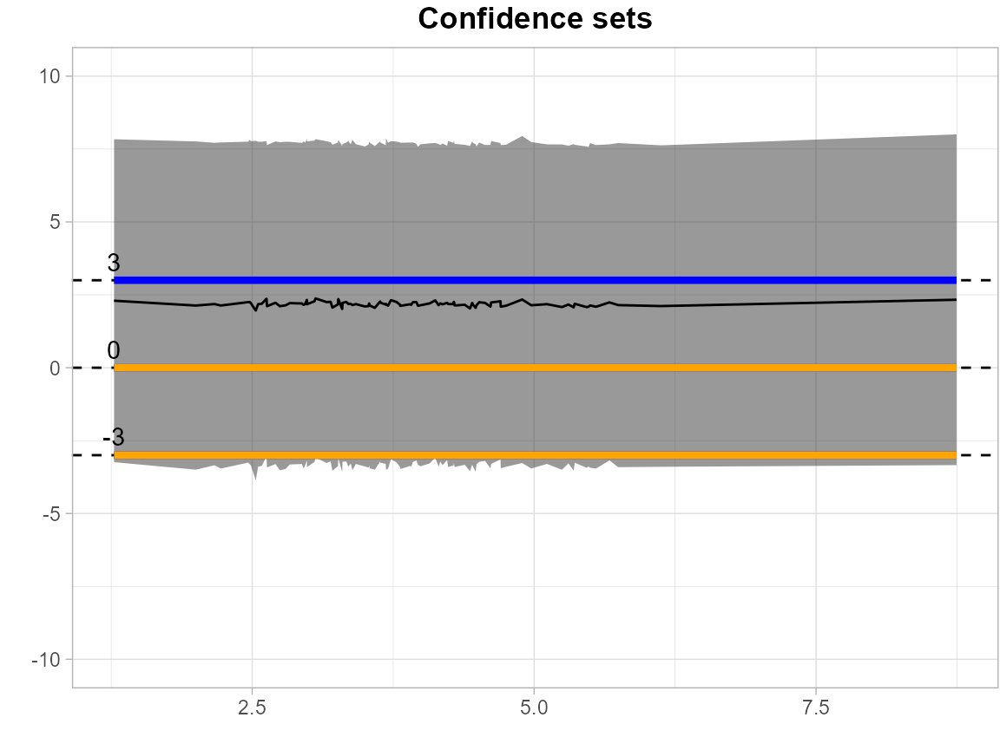

Linear_Model_Example
Angela Yu
2025-09-22
Source:vignettes/Linear_Model_Example.Rmd
Linear_Model_Example.RmdThe example here is to use simulated data to construct the
simultaneous outer and inner confidence region from simultaneous
confidence bands (SCB) using linear regression.
SCoRES::SCB_linear_outcome() function use a non-parametric
bootstrap algorithm to construct the SCB in linear regression. The
argument df_fit specifies a data frame containing the
training design matrix used to fit the linear model, while
grid_df define the mean outcome for which simultaneous
confidence bands (SCB) are constructed. Use argument model
to specify the formula used for fitting the linear model.
In the following example, we establishes simultaneous confidence bands for the expected response surface , with the independent variables and discretized into 100 equidistant points over the domain .
library(SCoRES)
set.seed(262)
# generate simulated data
x1 <- rnorm(100)
x2 <- rnorm(100)
epsilon <- rnorm(100,0,sqrt(2))
y <- -1 + x1 + 0.5 * x1^2 - 1.1 * x1^3 - 0.5 * x2 + 0.8 * x2^2 - 1.1 * x2^3 + epsilon
df <- data.frame(x1 = x1, x2 = x2, y = y)
grid <- data.frame(x1 = seq(-1, 1, length.out = 100), x2 = seq(-1, 1, length.out = 100))
# fit the linear regression model and obtain the SCB for y
model <- "y ~ x1 + I(x1^2) + I(x1^3) + x2 + I(x2^2) + I(x2^3)"
results <- SCB_linear_outcome(df_fit = df, model = model, grid_df = grid)The levels = c(-0.3, 0, 0.3) argument specifies a set of
thresholds, and SCoRES::plot_cs() function estimates
multiple inverse upper excursion sets corresponding to these thresholds,
and plot the estimated inverse region, the inner confidence region, and
the outer confidence region.
results <- tibble::as_tibble(results)
suppressWarnings(plot_cs(results,
levels = c(-0.3, 0, 0.3),
x = seq(-1, 1, length.out = 100),
mu_hat = results$Mean,
xlab = "x1",
ylab = "y",
level_label = T,
min.size = 40,
palette = "Spectral",
color_level_label = "black"))
In the following example, we establishes simultaneous confidence bands for the expected response surface , with the independent variable discretized into 100 equidistant points over the domain .
grid <- data.frame(x2 = seq(-1, 1, length.out = 100))
results <- SCB_linear_outcome(df_fit = df, model = model, grid_df = grid)The levels = c(-1.5, -1.0, -0.5) argument specifies a
set of thresholds, and SCoRES::plot_cs() function estimates
multiple inverse upper excursion sets corresponding to these thresholds,
and plot the estimated inverse region, the inner confidence region, and
the outer confidence region.
results <- tibble::as_tibble(results)
suppressWarnings(plot_cs(results,
levels = c(-1.5, -1.0, -0.5),
x = seq(-1, 1, length.out = 100),
mu_hat = results$Mean,
xlab = "x2",
ylab = "y",
level_label = T,
min.size = 40,
palette = "Spectral",
color_level_label = "black"))
In addition to linear regression, SCoRES also
providesSCoRES::SCB_logistic_outcome() for estimating the
SCB for outcome of logistic regression. The mean outcome here for
establishing the SCB stays the same.
# generate simulated data
x1 <- rnorm(100)
x2 <- rnorm(100)
mu <- -1 + x1 + 0.5 * x1^2 - 1.1 * x1^3 - 0.5 * x2 + 0.8 * x2^2 - 1.1 * x2^3
p <- expit(mu)
y <- rbinom(100, size = 1, prob = p)
df <- data.frame(x1 = x1, x2 = x2, y = y)
grid <- data.frame(x1 = seq(-1, 1, length.out = 100), x2 = seq(-1, 1, length.out = 100))
# fit the logistic regression model and obtain the SCB for y
model <- "y ~ x1 + I(x1^2) + I(x1^3) + x2 + I(x2^2) + I(x2^3)"
results <- SCB_logistic_outcome(df_fit = df, model = model, grid_df = grid)Likewise, the levels = c(0.3, 0.4, 0.5) argument
specifies a set of thresholds, and SCoRES::plot_cs()
function estimates multiple inverse upper excursion sets corresponding
to these thresholds, and plot the estimated inverse region, the inner
confidence region, and the outer confidence region.
results <- tibble::as_tibble(results)
plot_cs(results,
levels = c(0.3, 0.4, 0.5),
x = seq(-1, 1, length.out = 100),
mu_hat = results$Mean,
xlab = "x1",
ylab = "y",
level_label = T,
min.size = 40,
palette = "Spectral",
color_level_label = "black")
In the following example, we establishes simultaneous confidence bands for the expected response surface , with the independent variable discretized into 100 equidistant points over the domain .
grid <- data.frame(x2 = seq(-1, 1, length.out = 100))
results <- SCB_logistic_outcome(df_fit = df, model = model, grid_df = grid)The levels = c(0.3, 0.4, 0.5) argument specifies a set
of thresholds, and SCoRES::plot_cs() function estimates
multiple inverse upper excursion sets corresponding to these thresholds,
and plot the estimated inverse region, the inner confidence region, and
the outer confidence region.
results <- tibble::as_tibble(results)
suppressWarnings(plot_cs(results,
levels = c(0.3, 0.4, 0.5),
x = seq(-1, 1, length.out = 100),
mu_hat = results$Mean,
xlab = "x2",
ylab = "y",
level_label = T,
min.size = 40,
palette = "Spectral",
color_level_label = "black"))
Besides, SCoRES::SCB_regression_coef can estimate the
SCB for every coefficient (50 in total) in the linear/logistic
model.
library(MASS)
# generate simulated data
M <- 50
rho <- 0.4
n <- 500
beta <- rnorm(M, mean = 0, sd = 1)
Sigma <- outer(1:M, 1:M, function(i, j) rho^abs(i - j))
X <- MASS::mvrnorm(n = n, mu = rep(0, M), Sigma = Sigma)
epsilon <- rnorm(n, mean = 0, sd = 1)
y <- X %*% beta + epsilon
df <- as.data.frame(X)
names(df) <- paste0(1:M)
df$y <- as.vector(y)
# fit the linear regression model and obtain the SCB for all betas
model <- "y ~ ."
results <- SCB_regression_coef(df, model)Likewise, the levels = c(-2, -0.5, -0.1, 0.2) argument
specifies a set of thresholds, and SCoRES::plot_cs()
function estimates multiple inverse upper excursion sets corresponding
to these thresholds, and plot the estimated inverse region, the inner
confidence region, and the outer confidence region.
results <- tibble::as_tibble(results)
plot_cs(results,
levels = c(-2, -0.5, -0.1, 0.2),
x = c("intercept", as.character(1:50)),
mu_hat = results$Mean,
xlab = "Coefficients",
ylab = "SCBs for Coefficients",
level_label = T,
min.size = 40,
palette = "Spectral",
color_level_label = "black")
Users can also compute the SCB for any linear combination of these
coefficients by specifying a weight vector of the same length as the
coefficient vector. This can be done by using
SCoRES::SCB_regression_outcome(), and specify the linear
combination through w. For example, suppose we want to
calculate the SCB for the linear combination
for model:
:
x1 <- rnorm(100)
x2 <- rnorm(100)
epsilon <- rnorm(100,0,sqrt(2))
y <- -1 + x1 + 0.5 * x1^2 - 1.1 * x1^3 - 0.5 * x2 + 0.8 * x2^2 - 1.1 * x2^3 + epsilon
df <- data.frame(x1 = x1, x2 = x2, y = y)
grid <- data.frame(x1 = seq(-1, 1, length.out = 100), x2 = seq(-1, 1, length.out = 100))
# fit the linear regression model and obtain the SCB for y
model <- "y ~ x1 + I(x1^2) + I(x1^3) + x2 + I(x2^2) + I(x2^3)"
w <- matrix(c(0, 1, 1, 1, 0, 0, 0), ncol = 7)
SCB_regression_outcome(df_fit = df, model = model,
grid_df = grid, n_boot = 50, alpha = 0.1,
fitted = FALSE, w = w)
#> scb_low Mean scb_up
#> scb_low -0.5933254 0.7019345 1.997194In the following example, we load ipad dataset, and
establishes simultaneous confidence bands for all the coefficients and
the intercept in the model fitted.
library(SCoRES)
library(dplyr)
library(ggplot2)
set.seed(262)
data(ipad)
df <- ipad %>%
filter(t_mmr1 > 0) %>%
select(p_fpc1, p_fpc2, p_fpc3, p_fpc4, p_fpc5, p_fpc6,
p_PMC_pctChg, p_auc, t_mmr1,
i_prop_false_timeout, i_prop_failed1, i_prop_failed2,
i_judgement_time1, i_judgement_time2, i_time_outside_reticle,
i_time_on_edge, i_prop_hit, i_correct_reaction2,
i_reaction_time_max2, i_reaction_time2, i_rep_shapes12,
i_rep_shapes34, i_memory_time12, i_memory_time34,
i_composite_score, h_hr, h_dbp, h_sbp, recent_smoke) %>%
mutate(log_tmmr1 = log(t_mmr1))
df_lin <- df %>%
select(-recent_smoke, -t_mmr1)
# fit the linear regression model and obtain the SCB for y
model_lin <- "log_tmmr1 ~ ."
results <- SCB_regression_coef(df_fit = df_lin, model = model_lin)The levels = c(0.2, 0.3, 0.4) argument specifies a set
of thresholds, and SCoRES::plot_cs() function estimates
multiple inverse upper excursion sets corresponding to these thresholds,
and plot the estimated inverse region, the inner confidence region, and
the outer confidence region. Here, for illustration, we filter out the
SCB for intercept.
results <- tibble::as_tibble(results)
suppressWarnings(plot_cs(results,
levels = c(0.2, 0.3, 0.4),
x = c("Intercept", names(df_lin)[1:(length(names(df_lin))-1)]),
mu_hat = results$Mean,
xlab = "",
ylab = "",
level_label = T,
min.size = 40,
palette = "Spectral",
color_level_label = "black"))
We fit a logistic model with the same equation, and obtain SCBs for all coefficients and the intercept.
df_log <- df %>%
select(-t_mmr1, -log_tmmr1)
# fit the logistic regression model and obtain the SCB for y
model_log <- "recent_smoke ~ ."
results <- SCB_regression_coef(df_fit = df_log, model = model_log, type = "logistic")The levels = c(2e-07, 3e-07, 4e-07) argument specifies a
set of thresholds, and SCoRES::plot_cs() function estimates
multiple inverse upper excursion sets corresponding to these thresholds,
and plot the estimated inverse region, the inner confidence region, and
the outer confidence region. Here, for illustration, we filter out the
SCB for intercept.
results <- tibble::as_tibble(results[-1, ])
suppressWarnings(plot_cs(results,
levels = c(2e-07, 3e-07, 4e-07),
x = c(names(df_log)[1:(length(names(df_log))-1)]),
mu_hat = results$Mean,
xlab = "",
ylab = "",
level_label = T,
min.size = 40,
palette = "Spectral",
color_level_label = "black"))
In the following example, we illustrate the usge of
grid_df for ipad data.
grid_lin <- df_lin %>%
select(p_fpc1, p_fpc2, p_fpc3, p_fpc4, p_fpc5, p_fpc6, p_PMC_pctChg, p_auc) %>%
arrange(p_auc)
results <- SCB_linear_outcome(df_fit = df_lin, model = model_lin, grid_df = grid_lin)The levels = c(-3, 0, 3) argument specifies a set of
thresholds, and SCoRES::plot_cs() function estimates
multiple inverse upper excursion sets corresponding to these thresholds,
and plot the estimated inverse region, the inner confidence region, and
the outer confidence region.
results <- tibble::as_tibble(results)
p <- suppressWarnings(plot_cs(results,
levels = c(-3, 0, 3),
x = grid_lin$p_auc,
mu_hat = results$Mean,
xlab = "",
ylab = "",
level_label = T,
min.size = 40,
palette = "Spectral",
color_level_label = "black"))
p + ylim(-10, 10)